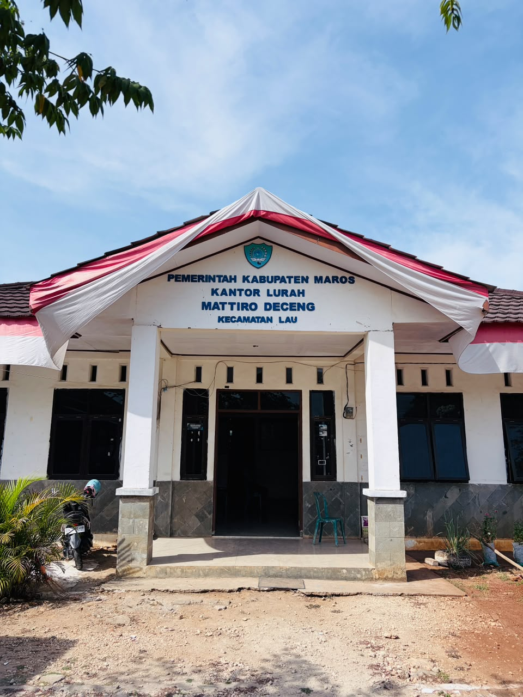

Kelurahan yang baik dimulai dari warga yang saling mengenal.
Portal resmi Kelurahan Mattiro Deceng, Kecamatan Lau, Kabupaten Maros: informasi pemerintahan, layanan administrasi, berita, dan data wilayah dalam satu tempat.
Urus surat via WhatsAppLihat prosedurCari informasi kelurahan

Sambutan Lurah
Lurah Mattiro Deceng
Visi, Misi & Motto
Visi
Misi
Motto
Kelurahan dalam angka
0Jumlah jiwa
0Lingkungan
0Posyandu
0Poskesdes
0Sekolah
Lingkungan
Posyandu
Poskesdes
Sekolah
Layanan administrasi
Pilih layanan, kirim data lewat WhatsApp, lalu ambil surat di kantor kelurahan.
Layanan bantuan
Tanyakan syarat dan pendaftaran ke kantor kelurahan.
Standar operasional prosedur
Waktu dan biaya pelayanan. Persyaratan lengkap tiap layanan ada pada papan SOP di kantor kelurahan.
Agenda kelurahan
Papan informasi
Visi misi dan SOP pelayanan juga dipasang di papan informasi kantor kelurahan.
Lihat prosedurGaleri
Arsip kegiatan dan suasana Kelurahan Mattiro Deceng. Geser foto untuk melihat koleksi lainnya.
1 / 10